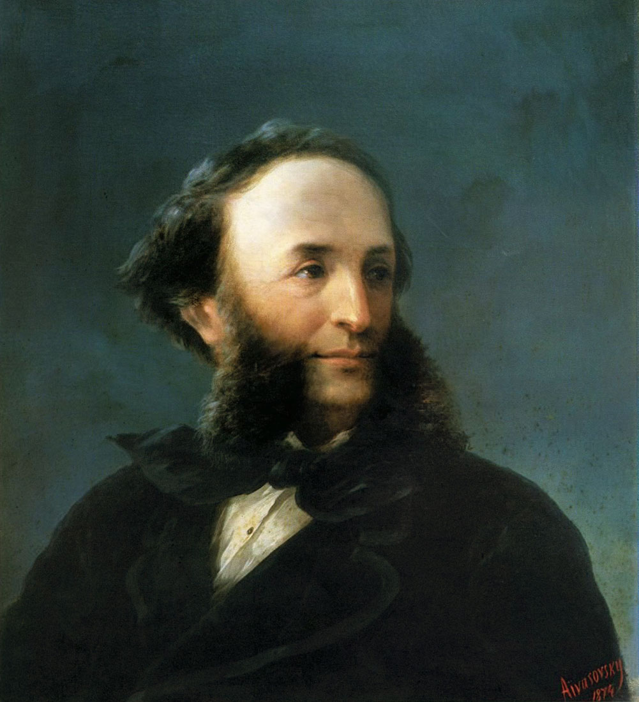

Ivan Konstantinovich Aivazovsky
伊凡·康斯坦丁诺维奇·艾瓦佐夫斯基 1817.07.29 - 1900.05.05

Figure 1: 肖像画
艾瓦佐夫斯基出生于克里米亚费奥多西亚的一个穷困的亚美尼亚家庭。他的艺术天赋使他获得奖学金，先后进入 1st Simferopol Gymnasium 和帝国艺术学院学习，毕业时他获得了金奖。他的早期以风景画和海景画获得收入，在周游欧洲之前画了一系列克里米亚沿岸城镇的作品。后期他的海军作品使他从俄罗斯海军获得长期收益。
1845 年，在 苏丹阿卜杜勒-迈吉德一世的邀请下，前往君士坦丁堡。在 1845 年到 1890 年之间他 8 次访问这座城市。在他旅居期间，艾瓦佐夫斯基被奥斯曼帝国苏丹阿卜杜勒-迈吉德一世、阿卜杜勒-阿齐兹一世和阿卜杜勒-哈米德二世授命为宫廷画家，创作大量绘画。其中 30 副作品如今在奥斯曼帝国皇宫、多尔玛巴赫切宫和土耳其其他博物馆展出。他的作品还在俄罗斯和前苏联多个博物馆收藏，包括圣彼得堡的埃尔米塔日博物馆、乌克兰的艾瓦佐夫斯基艺术展馆等。土耳其总统阿卜杜拉·居尔的办公室挂着艾瓦佐夫斯基的作品。
31 岁时，艾瓦佐夫斯基与圣彼得堡英语教师朱莉娅·格雷夫斯（ Julia Graves ）结婚，他们有 4 个女儿。后来他们离婚，艾瓦佐夫斯基在 65 岁时和一个年轻的来自西奥多西亚的亚美尼亚寡妇安娜·布尔纳江结婚。
1895 年，艾瓦佐夫斯基被发生在小亚细亚的亚美尼亚大屠杀震惊，以这个主题创作了大量作品，如《The Expulsion of the Turkish Ship》和《The Armenian Massacres at Trevizond》，并放弃了君士坦丁堡授予他的一个奖章。他在费奥多西亚度过了他的晚年，用他自己的资产为城市提供水，创办了一个艺术学校，在该地区开始首个考古挖掘和建造了一个历史博物馆。在他的努力下，费奥多西亚建成了一个商业港口并与铁路网络相连。
艾瓦佐夫斯基以其海景画和海岸系列闻名。他的描绘波涛和海浪的光线的技术和想象力尤其令人钦佩，使他的作品非常浪漫并具备现实主义，体现出英国水彩画家 J. M. W. 特纳和俄罗斯画家西尔维斯特·谢德林（Sylvester Shchedrin ）风格。尤其是他在几乎透明的层次上描绘不同的日光和月光的能力，有时从云后射出，有时从雾中射出。艾瓦佐夫斯基是他所处时期最多产的亚美尼亚画家，一生作品超过 6000 幅。

Figure 2: Chaos. The Creation of the World, 1841

Figure 3: Battle of Navarino, 1846

Figure 4: Battle of Çesme at Night, 1848

Figure 5: The Ninth Wave, 1850

Figure 6: Turkish Sea Battle of Sinop, 1853

Figure 7: Moonlit Seascape With Shipwreck, 1863

Figure 8: The Shipwreck on Northern sea,1865

Figure 9: American Shipping off the Rock of Gibraltar, 1873

Figure 10: The Shipwreck, 1875

Figure 11: Storm At Sea, 1881

Figure 12: A Rocky Coastal Landscape in the Aegean, 1884

Figure 13: Wrath of the Seas, 1886

Figure 14: Storm on the Azov Sea, 1886

Figure 15: Brig "Mercury" Attacked by Two Turkish Ships, 1892

Figure 16: Ayvaz sredy voln, 1898

Figure 17: Moonlight, 1899